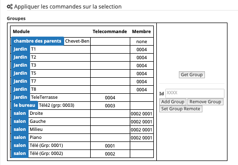
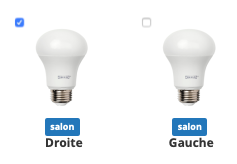
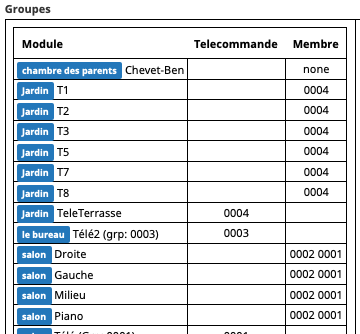
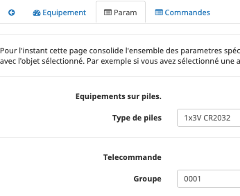

Groupes¶
Intro¶
Les équipements peuvent être adressés de deux façons:
Adresse Zigbee courte: Les adresses courtes permettent de contacter un équipement directement.
Adresse Zigbee de groupe: Les adresses de groupes permettent de joindre un ensembles d’équipements en même temps.
Les adresses de groupe sont typiquement utilisées pas les télécommandes Zigbee: Hue, Ikea,…
L’intérêt est qu’un seul message sera envoyé sur le réseau Zigbee, répété par tous les routeurs et tous les équipements ayant cette adresse de groupe réagiront donnant une impression d’exécution simultanée.
Note
Astuce: Ça peut aussi vous sortir d’une situation ou la couverture radio n’est pas bonne et ou vous avez du mal à joindre un équipement. Si vous l’adressez avec son adresse courte, le message doit être routé jusqu’à sa destination par une route spécifique qui peut être interrompu par une muvaise liaison radio. Si vous l’adressez avec une adresse de groupe, le message va être répété par tous les routeurs et vous augmentez la chance que l’équipement reçoive l’information.
Vous pouvez aussi utiliser un scénario dans Jeedom pour adresser un groupe d’équipements, en envoyant à chacun d’eux une commande. Cette solution ne permet pas d’avoir l’impression d’instantanéité mais est très flexible si vous avez un mix de produit zwave et Zigbee par exemple.
Avertissement
Les groupes Zigbee sont nécessaires pour la gestion des scènes.
Video¶
Gestion des groupes¶
La gestion des groupes se fait de deux façons
Note
L option A n’est pas très user friendly et est l’héritage des premieres versions d’Abeille. Je l a garde car elle me permet de faire des tests, et comme j’oubli, je reli ma doc de temps en temps pour savoir comment faire. Utilisez Option B.
Option A:¶
Soit depuis la ruche avec 3 commandes (Version initiale pour les développeurs):
Ajout
Retrait
Consultation
Option B:¶
Soit en utilisant la page de configuration du plug in (pour tous les utilisateurs):
Je vous recommande grandement l’option B.
A chaque fois que vous faites un ajout ou retrait, faites une Consultation/Get Group pour mettre à jour les objets Abeille.
Un équipement peut avoir plusieurs adresses de groupes, cela lui permet par de répondre à plusieurs télécommandes. Par exemple, un va et vient à deux, trois, quarts télécommandes,…
Ajout d un groupe à un équipement¶
Option A:¶
Premier champ: adresse de l’équipement
Deuxième champ: End Point de l’équipement
Troisième champ: l’adresse de groupe a ajouter
Option B:¶
Sélectionnez la ou les ampoules qui doivent faire partie du groupe (petite case au dessus à gauche des icones):
Faites un « Get Group » pour récupérer les groupes de cette/ces ampoule(s).
Sélectionnez de nouveau l ampoule et saisissez l’identifiant de groupe que vous voulez lui attribuer dans le champ Id, puis utiliser le bouton « Add Group ». Voila l “ampoule doit avoir son groupe de défini.
Maintenant si vous voulez piloter le groupe avec une télécommande Ikea, sélectionner la télécommande, mettez l’identifiant (Hexa à 4 digit) dans le champ Id, utilisez le bouton « Set Group Remote », et immédiatement réveillez la télécommande en appuyant sur un des boutons physique de celle ci. Il est possible que cela ne fonctionne pas du premier coup alors faites le une ou deux fois de plus. Jusqu’a ce qque vous ampoules réagissent à un appui sur la bouton physique de la télécommande. Maintenant il vous reste à renseigné dans l objet Télécommande l’Id du groupe dans ses paramètres pour qu’Abeille pilote le groupe.
Retrait d un groupe à un équipement¶
Option A:¶
Premier champ: adresse de l’équipement
Deuxième champ: End Point de l’équipement
Troisième champ: l’adresse de groupe a retirer
Option B:¶
Sélectionnez la ou les ampoules qui doivent faire partie du groupe (petite case au dessus à gauche des icônes), saisissez l’Id et utilisez les bouton « Remove Group ».
Récupérer les groupes d’un équipement¶
Option A:¶
Premier champ: adresse de l’équipement
Deuxième champ: End Point de l’équipement
L’information groupe doit remonter dans le champ groupe de l’équipement (peut être invisible par défaut, le rendre visible).
Option B:¶
Sélectionnez l’équipement et utilisez le bouton »Get Group ».
Commande des Groupes¶
Une fois que les groupes sont en place, il faut les commander. Pour cela vous pouvez par exemple utiliser les Télécommande Ronde 5 boutons de chez Ikea ou simuler une télécommande ronde Ikea avec Jeedom: telecommandeRonde5BoutonsSimulation.